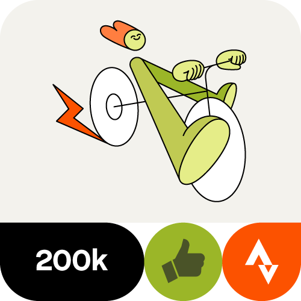
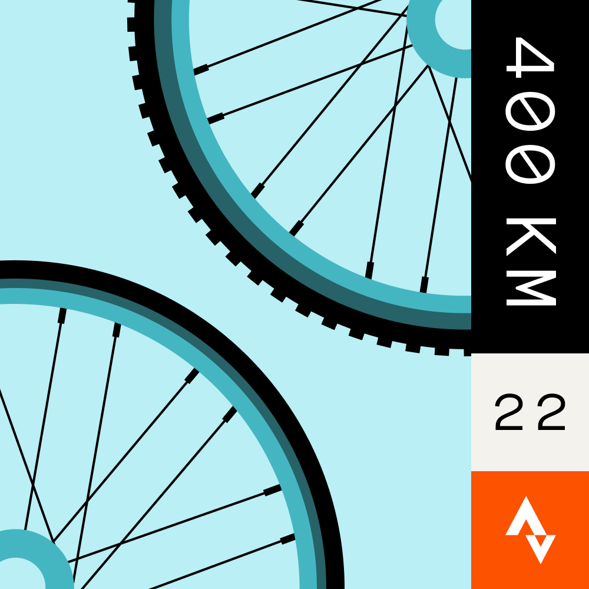
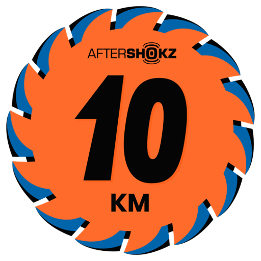

February Ride 200K Challenge
Feb 2024
TBD

February 5K x Brooks Challenge
Feb 2024

February Swim 5K Challenge
Feb 2024
11.7 km / 4h 46m

February 400-Minute Challenge
Feb 2024 · 1,733 min
177.1 km / 1,486 m

SPEEDO: CALL YOURSELF A SWIMMER
Feb 2024 · 14.3km
January Fresh Start Challenge
Jan 2024
36h 52m / 162.3 km

January Swim 5K Challenge
Jan 2024
7 km
January 400-Minute Challenge
Jan 2024
36h 52m / 162.3 km
January 5K x Brooks Challenge
Jan 2024

December Workout Challenge
Dec 2023
29h 11m
December Swim Challenge
Dec 2023
8.6 km / 3h 50m

December 10K
Dec 2023
December 5K x Brooks
Dec 2023

November Workout Challenge
Nov 2023
39h 52m
November Running Challenge
Nov 2023
113 km / 20h 45m
November Swim Challenge
Nov 2023
13 km
November 5K x Brooks
Nov 2023
October Workout Challenge
Oct 2023
38h 3m

October Swim Challenge
Oct 2023
13.6 km / 6h 3m
October Cycling Challenge x Le Col
Oct 2023
280.4 km / 17h 43m
PEdALED Odyssey Breakaway
Oct 2023
165.0 km / 8h 52m

CamelBak Chase 20 Challenge
Oct 2023
23h 1m

October 5K x Brooks
Oct 2023

September Swim Challenge
Sep 2023
12.5 km / 5h 9m

Challenge for a Better World with AireLibre
Sep 2023 · 13h 33m

September 5K x Brooks
Sep 2023
September Cycling Challenge
Sep 2023
348.7 km / 19h 33m
Merrell 'Find The Love. Run Wild.' Challenge
Sep 2023 · 10h 11m

August Cycling Challenge
Aug 2023
227.9 km / 12h 13m

August 5K x Brooks
Aug 2023

Le Col Tour Challenge
Jul 2023
517.4 km

July Cycling Challenge
Jul 2023
463 km / 3,961 m

192,004,986.4 km
July 5K x Brooks
Jul 2023

June Cycling Challenge
Jun 2023
279 km / 3,070 m
Your Ride Counts on Strava
Jun 2023
192,004,986.4 km
June 5K x Brooks
Jun 2023
April Running Challenge
Apr 2023
125.4 km / 1,821 m
April Cycling Challenge
Apr 2023
486.6 km / 28h 8m
April 10k
Apr 2023
25.4 km / 607 m

Wings for Life World Run Training Challenge 2023
Apr 2023 · 64h 59m
March Cycling Challenge
Mar 2023
334.0 km / 3,613m
Science in Sport Classic 100 Challenge
Mar 2023
Le Col Shape Up Challenge
Mar 2023
November 30-Hour Challenge
Nov 2022 · 52h 1m
September Cycling Challenge
Sep 2022
409.5 km / 4,617 m
September Running Challenge
Sep 2022
114.4 km / 915 m
STEP'N into the Metaverse
Sep 2022
July Cycling Challenge
Jul 2022
464.6 km / 4,146 m
Stage 12 – Alpe d'Huez
Jul 2022
Running Up For Air With Patagonia
Jun 2022
June Sweat With Pride Challenge
Jun 2022 · 37h 15m
The imaginPlanet Tour: 1 ride = 1 tree
Jun 2022
May Running Challenge
May 2022
107.1 km / 969 m
May Cycling Challenge
May 2022
490.4 km / 5,312 m
May Water Sport Challenge
May 2022
24.7 km / 10h 26m

April Cycling Challenge
Apr 2022
470.2 km / 5,810 m
Ride La Passione & train with the Blues
Mar 2022
Castelli Milano-Sanremo Challenge
Mar 2022
March Favorite Way 200K
Mar 2022
491.6 km / 6,085 m
February Running Challenge
Feb 2022
107.9 km / 1,176 m
Le Col Form Finder Challenge
Feb 2022
PUMA NITRO CHALLENGE #1
Nov 2021
October Running Challenge
Oct 2021
110.9 km / 1,473 m
Gatorade 3x4 Challenge
Oct 2021
October Cycling Challenge
Oct 2021
447.3 km / 4,855 m
July 30-Hour Challenge
Jul 2021 · 55h 34m
787.2 km / 7,512 m
July Cycling Challenge
Jul 2021

July 5k
Jul 2021
May Cycling Challenge
May 2021
560.8 km / 6,241 m
1% Better
May 2021 · 62h 37m
April Running Challenge
Apr 2021
108.4 km / 1,394 m
April Cycling Challenge
Apr 2021
416.4 km / 5,935 m
April Swim Challenge
Apr 2021
21.7 km / 9h 28m
Muc-Off presents: Ride Uninterrupted
Apr 2021
March Running Challenge
Apr 2021
113.9 km / 1,608 m
March Cycling Challenge
Mar 2021
522.9 km / 6,476 m
January Fresh Start Challenge
Jan 2021
November Favorite Way 400K
Nov 2020 · 54h 10m

AfterShokz 10KM for #GiveGoodVibez
Nov 2020
August Cycling Climbing Challenge
Aug 2020 · 8,445 m
August Water Sport Challenge
Aug 2020
25.6 km / 11h 44m
Le Col Flat Out For 5
Aug 2020

PowerDot Grand Tour
Jul 2020 · 302.3 mi
Le Col Faster Further 400 Challenge
Jul 2020
June Cycling Challenge
Jun 2020
737.5 km
Le Col Fit for 300 Challenge
May 2020

May – Ride On Challenge
May 2020
35h 26m

May 5K
May 2020

July Climbing Challenge
Jul 2016
8,739 m

Alpe d’Huez Climbing Challenge
Jul 2015
2,414 m
Climb for Nepal - Cycling
Jun 2015
9,701 m
Skratch Labs Stage Race Challenge
May 2014
18h 40m
Strava Climbing Challenge
May 2014
2,531 m